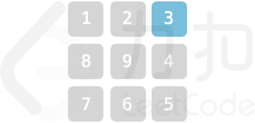
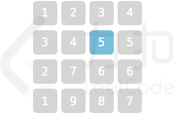
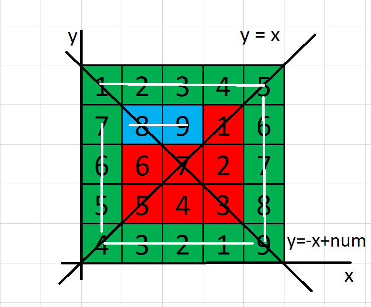

采购方案
小力将 N 个零件的报价存于数组 nums 。小力预算为 target ，假定小力仅购买两个零件，要求购买零件的花费不超过预算，请问他有多少种采购方案。
注意：答案需要以 1e9 + 7 (1000000007) 为底取模，如：计算初始结果为：1000000008 ，请返回 1
示例 1：
输入：
nums = [2,5,3,5],target = 6输出：
1解释：预算内仅能购买
nums[0]与nums[2]。
示例 2：
输入：
nums = [2,2,1,9],target = 10输出：
4解释：符合预算的采购方案如下：
nums[0] + nums[1] = 4
nums[0] + nums[2] = 3
nums[1] + nums[2] = 3
nums[2] + nums[3] = 10
提示：
2 <= nums.length <= 10^51 <= nums[i], target <= 10^5
题目分析
本题标签： 排序 ; 双指针 ; 动态循环
- 题目的问题描述比较直白，在
nums数组中统计两者相加和小于target情况的总数。- 比较直白的思想是直接从数组
0号元素开始起， 依次枚举其后续元素，两者相加和小于target，计数加1。但此算法显然太过暴力，时间复杂度为 $O(N^2)$ 。
- 通过进一步的分析题目发现，若在原序列有序的情况下，问题似乎有更好的解法；
- 假定有非递减序列 $\{a_0, a_1, a_2, \cdots, a_n\}$ , 则有：
- $a_i + a_{j - 1} \le a_i + a_j \quad 其中 \quad 0 \le i < j - 1 < n$
- $a_i + a_j \le a_{i + 1} + a_j \quad 其中 \quad 0 < i + 1 < j < n $
- 由 性质1 可得：若有 $a_i + a_j \le target$ 则有 $a_i + a_{j - 1} \le target$ ， 所以对第二元素的枚举选择由序列最后开始 。
- 由 性质2 可得：若有 $a_i + a_j > target$ 则必有 $a_{i + 1} + a_j > target$ ，故在进行第二层循环即对第二元素的枚举时可 对整体序列进行剪切 ，不断缩小序列规模 ，直至待处理序列为
0。- 由上述两步，可得，在选择
i元素，并确定j元素的最大位置之后，j之前的元素必定满足与i相加小于等于target，故i号元素的可行方案次数即可通过j - i来确定，不断累积此值，直至i >= j为止，计算出所有可行方案次数。
AC 代码
1 | class Solution { |
算法分析
由上述算法实现代码可较明显的分析出算法的时间复杂度；首先使用
sort函数对序列进行排序，时间复杂度为 $O(NlogN)$ ， 再次为一个 动态循环 ，之所以称之为动态循环，是因为循环的大小在不断减小；第二层循环由上述所得性质得出，通过比较判断，不断缩小k的大小。 故此二层循环的总和时间复杂度为 $O(N_i + N_k) = O(N)$ ， 再综合上述排序算法的使用，于是可得算法总时间复杂度为 $O(NlogN)$ 。
乐团占位
某乐团的演出场地可视作 num * num 的二维矩阵 grid（左上角坐标为 [0,0] )，每个位置站有一位成员。乐团共有 9 种乐器，乐器编号为 1~9 ，每位成员持有 1 个乐器。
为保证声乐混合效果，成员站位规则为：自 grid 左上角开始顺时针螺旋形向内循环以 1，2，...，9 循环重复排列。例如当 num = 5 时，站位如图所示

请返回位于场地坐标 [Xpos,Ypos] 的成员所持乐器编号。
示例 1：
输入：
num = 3, Xpos = 0, Ypos = 2输出：
3解释：

示例 2：
输入：
num = 4, Xpos = 1, Ypos = 2输出：
5解释：

提示：
1 <= num <= 10^90 <= Xpos, Ypos < num
题目分析
本题标签： 数论
分析题目可得，计算成员站位，实际上就是计算其按照题目所给规律顺序而得到的序号之后对
9取余即可，例如题干给出的num = 5， 若取Xpos = 1, Ypos = 2其序号为18故其所持乐器为18 % 2 = 0 -> 9。
- 进一步分析题目可发现，此 规律顺序在方格中的路径方向分为四种方向 : “向右，向下，向左，向上”， 又进一步发现，节点的顺序路径可分为其所在层及其所在层之外（如下图所示）：

- 故可根据方格，建立坐标系，并将方格使用函数 $y = x$ 及 $y = -x + num$ 划分为 $4$ 个区域。（注：这里的 $num$ 做了
-1处理 以符合坐标要求） ，节点的路径方向在各区域内是完全一致的。
- 由上图可发现，图中以
num = 5, Xpos = 1, Ypos = 2作为示例，其所经过的路径用 绿色 和 蓝色 表示，未经过的路径用 红色 表示。经过的路径其中 红色 的部分为其所处圈层外所经过的路径， 蓝色 部分为其所处圈层所经过的路径。
- 故可分析得出，无论 蓝色区域 为多大， 绿色区域 都是固定的。
- 所以可以通过计算出其所处圈层的方式，计算出红色部分，再依据其具体位置及所处圈层，计算出蓝色部分，即可求得其 序号，从而计算出其 所持乐器 编号。
算法实现
- 首先对题目所给
num进行-1处理，然后利用函数 $y = x$ 及 $y = -x + num$ 计算出其所处区域Quadrant。- 根据
Quadrant分别计算出其所处圈层的边长edge由图4 可看出，所在圈层的边长即为 其所在区域两函数的距离，故根据
Quadrant，通过不同的计算方式，求得相应edge即可- 使用
edge和num计算出 绿色区域 。- 根据
Quadrant计算节点与 $y = x$ 或 $y = -x + num$ 的距离，然后再加上Quadrant * edge计算出 蓝色区域。- 两者相加，取余，求得最终结果。
AC 代码
1 | class Solution { |
算法分析
- 本题通过归纳法，得出 “站位” 的计算公式，直接算得位置，故整体算法复杂度为 $O(1)$ 。
魔塔游戏
小扣当前位于魔塔游戏第一层，共有 N 个房间，编号为 0 ~ N-1 。每个房间的补血道具/怪物对于血量影响记于数组 nums，其中正数表示道具补血数值，即血量增加对应数值；负数表示怪物造成伤害值，即血量减少对应数值；0 表示房间对血量无影响。
小扣初始血量为 1，且无上限。 假定小扣原计划按房间编号升序访问所有房间补血/打怪， 为保证血量始终为正值 ，小扣需对房间访问顺序进行调整， 每次仅能将一个怪物房间（负数的房间）调整至访问顺序末尾 。请返回小扣最少需要调整几次，才能顺利访问所有房间。若调整顺序也无法访问完全部房间，请返回 -1。
示例 1：
输入：
nums = [100,100,100,-250,-60,-140,-50,-50,100,150]输出：
1解释：初始血量为
1。至少需要将nums[3]调整至访问顺序末尾以满足要求。
示例 2：
输入：
nums = [-200,-300,400,0]输出：
-1解释：调整访问顺序也无法完成全部房间的访问。
提示：
1 <= nums.length <= 10^5-10^5 <= nums[i] <= 10^5
题目分析
本题标签 ： 最小堆 ； 贪心
- 题目意思比较明显，通过调整房间保证血量的同时，走完全部房间。
- 主要问题在于如何调整房间，两个问题：
- 何时调整房间；
- 如何调整房间使得调换次数最少。
- 问题1的答案比较明显，当经过该房间后，
hp < 1, 说明此时需要调整房间，来让血量保持为正数。问题2根据 贪心策略 分析，应将 此前访问过的扣血量最大的 房间调整到最后，这样可以使得需要调整的次数最少；而为了实现找到此前访问过的扣血量最大的房间，我们需要使用 最小堆 ，每遇到一个 扣血的房间 就将其插入最小堆，当hp < 1时，将 堆顶元素 取出，并且回复相应的hp，并将 此房间放到最后。- 持续执行上述步骤，直至访问全部房间。需要注意的是，在实现 将房间放到最后的操作 中，我们并不需要真正将其放到序列最后，而是通过
rearM变量将其放到最后的房间的 扣血量 统计，当处理完原始序列最后一个元素时，将hp减去rearM即可。
AC 代码
1 | class Solution { |
算法分析
上述代码主要涉及两个循环: 第一层循环主要是实现了对序列的遍历，时间复杂度为 $O(N)$, 循环内部将值小于
0的元素插入最小堆时间复杂度为 $O(logN)$， ，第二层循环通过不断将最小堆中元素取出，并回复血量hp -= mHeap.top()，使得血量保持为正数，此步复杂度为 $O(logN)$ ，故算法总体时间复杂度为 $(NlogN)$ 。